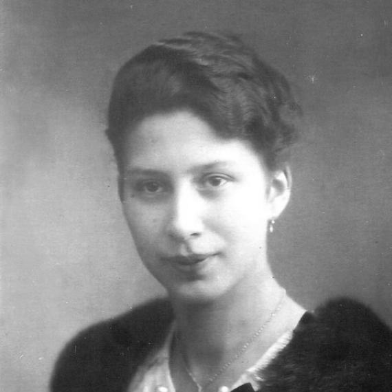

Hartheim · T4
Sofie Emilie Walburga Bauer
1898–1941 · 42 ans
Lire son histoire
Née à Regensburg, Sofie Weigert est l’aînée de cinq filles et apprend le métier de couturière. Elle épouse Johann Bauer en 1922 ; leur fille Johanna naît l’année suivante. Après de grandes difficultés familiales, elle est hospitalisée en 1926 et reste quinze ans à Karthaus-Prüll. Son dossier conserve notamment la trace de travaux de tricot.
Le 2 mai 1941, elle est transférée à Hartheim, où elle est vraisemblablement gazée le jour même. Sa famille reçoit une date et une cause de décès falsifiées. Johanna n’apprend le véritable sort de sa mère qu’en 2010, à 87 ans.